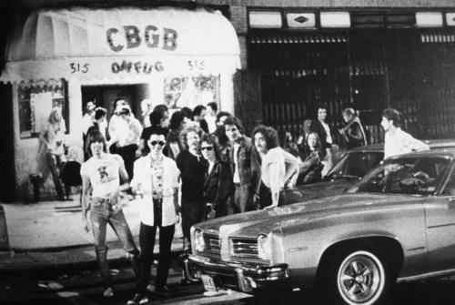
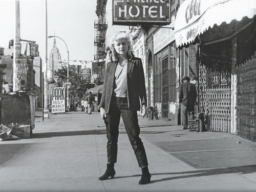
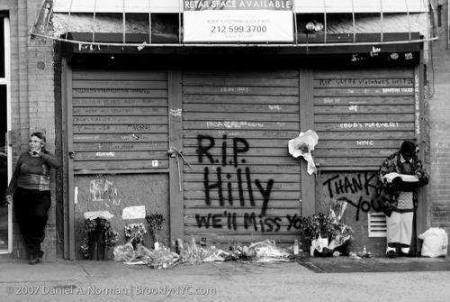

CBCG
Country, Bluegrass, and Blues, and Other Music For Uplifting Gourmandizers
CBCG opened up in 1973 by Hilly Krystal, originally the venue was for country, bluegrass, and blues (hence the name CBCG). Eventually though the venue would become known for becoming the epicenter of the American punk rock scene.

In February 1974, Hilly Kristal booked the local band Squeeze for a Tuesday and Wednesday residency, marking the club’s shift from country and bluegrass to original rock. Squeeze was led by guitarist Mark Suall, who later joined CBGB’s house band, the Revelons, which included Fred Smith of Television and JD Daugherty of the Patti Smith Group. The collapse of the Mercer Arts Center in August 1973 had left unsigned bands with few places in the city to play original music, and Mercer refugees such as Suicide, the Fast, Ruby and the Rednecks, Jayne County, and the Magic Tramps soon found their way to CBGB.

Television’s third show, on April 14, 1974, is when Patti Smith and Lenny Kaye were introduced to the club. Patti Smith’s group would later make thier CBGB debut on February 14, 1975. Television had gotten onto the club’s schedule when Richard Hell and Tom Verlaine convinced Kristal to give them a Sunday-night slot, a booking many credit with starting CBGB’s punk era. Other early acts included the Dina Regine Band and the Stillettoes. In August 1974, the Ramones arrived along with a newly formed band called Angel and the Snake, which would later become Blondie.

In 1993, 315 Bowery was leased by the BRC (Bowery Residents Coalition)and turned into a homeless shelter. CBCG stayed on the ground floor until 2005 when Krystal and the BRC were in a rental dispute over backpay and building code violations. Unfortunatly Krystal lost the case and in 2006 CBCG closed it's doors. That followig year, Krystal would pass away and the front of the building would be memorialised by the community. In 2009 John Varvatos opened thir flagship store in the space. Orginally the store was planned to be turned into a bank, until Varvatos toured the space and decided to open his store there. The store has been in operation since 2009 and is still open today.